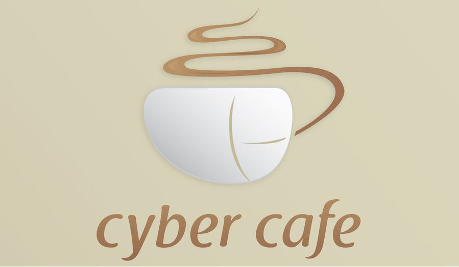

CYBER CAFFE SARAJEVO
The first online café in South Korea called Electronic Café opened in front of Hongik University in March 1988 by Ahn Sang-Su and Keum Nuri in Seoul. It had two 16bit computers connected to Online service networks through telephone lines. Online service users’ offline meetings were held in the Electronic Café, which served as a place that connected online and offline activities. The opening of the online café in Korea was 2–3 years ahead of other countries. The online café phenomenon in the United States was started in July 1991 by Wayne Gregori in San Francisco when he began SFnet Coffeehouse Network. Gregori designed, built and installed 25 coin-operated computer terminals in coffeehouses throughout the San Francisco Bay Area. The café terminals dialed into a 32 line Bulletin Board System that offered an array of electronic services including FIDOnet mail and, in 1992, Internet mail. The concept of a café with full Internet access (and the name Cybercafé) was invented in early 1994 by Ivan Pope. Commissioned to develop an Internet event for an arts weekend at the Institute of Contemporary Arts (ICA) in London, and inspired by the SFnet terminal based cafes, Pope wrote a proposal outlining the concept of a café with Internet access.
ABOUT

| 
| 
|
| Location | ||